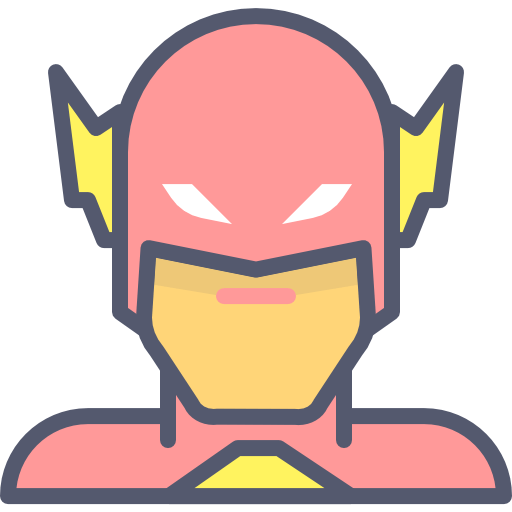

Actividad Git-Github Portafolio Justine Bravo Gomez
Sobre Mi

Desarrollo de software
Inteligencia artificial
Desarrollo web
¡Gracias por visitar mi perfil! Estoy emocionado por seguir aprendiendo y creciendo en el mundo del desarrollo de software. 🚀
👋 ¡Hola, bienvenido a mi perfil!
Soy un estudiante de Ingeniería Informática. Apasionado por el desarrollo de software, siempre estoy en busca de aprender nuevas tecnologías y mejorar mis habilidades.
🛠️ Habilidades
Lenguajes de programación: Python, Java.
Bases de datos: SQL, MySQL.
Otros: Git, GitHub, VS Code, MySQL Workbench.
🌱 Actualmente interesado en aprender más sobre desarrollo web full stack.
✨ Intereses
¡Gracias por visitar mi perfil! Estoy emocionado por seguir aprendiendo y creciendo en el mundo del desarrollo de software. 🚀
Habilidades
Estas son algunas de las tecnologías que manejo y aplico en mis proyectos web:
HTML – Estructura semántica, etiquetas accesibles y organización clara del contenido.
CSS – Diseño responsivo con Flexbox y Grid, uso de variables, y enfoque en contraste y armonía visual.
JavaScript – Interacción dinámica con el DOM, manejo de eventos, consumo de APIs y depuración con consola.